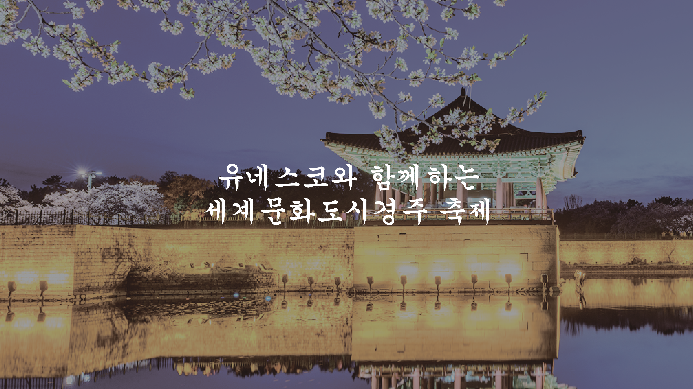
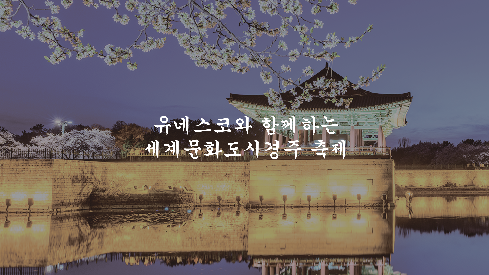

신라대종
국보 제29호인 성덕대왕신종을 현대적 기술로 재현한 종이다. 성덕대왕신종은 신라 35대 경덕왕때 만들기 시작해 36대인 혜공왕 때 완성되었다. 1,200여 년 동안 서라벌 전역에 울려 퍼졌으나 1992년 타종을 마지막으로 더 이상 울리지 않게 되었다. 경주시가 성덕대왕신종의 정신과 가치를 이은 새로운 종을 주조한 것이다.

 


국보 제29호인 성덕대왕신종을 현대적 기술로 재현한 종이다. 성덕대왕신종은 신라 35대 경덕왕때 만들기 시작해 36대인 혜공왕 때 완성되었다. 1,200여 년 동안 서라벌 전역에 울려 퍼졌으나 1992년 타종을 마지막으로 더 이상 울리지 않게 되었다. 경주시가 성덕대왕신종의 정신과 가치를 이은 새로운 종을 주조한 것이다.
돌담길 양옆으로 벚나무가 심어져 있어 따뜻한 봄이면 아름다운 벚꽃 터널을 이룬다. 돌담길 사이사이 아름 다운 시를 새겨넣은 패가 걸려 있어 여유롭게 돌담길을 걸으며 잊었던 문학적 감성도 채울 수 있다.
국보 제31호로, 천체의 움직임을 관찰하던 신라 시대의 천문 기상 관측대다. 받침대 역할을 하는 기단부위에 술병 모양의 원통 부를 올리고 맨 위에 정자형 정상부를 얹은 모습이며, 높이는 약 9m다. 신라 선덕여왕 때 세운 것으로 추측되며, 동양에서 가장오래된 천문대로서 그 가치가 매우 높다.
김 씨 왕조의 시조, 김알지의 탄생 설화가 깃든 숲, 계림은 원래 성스러운 숲이란 뜻의 ‘시림’으로 불렸는데, 닭과 관련된 김알지의 탄생설화 때문에 닭이 우는 숲이란 뜻의 계림으로 불리게 되었다.
사적 제16호로, 신라 궁궐이 있던 도성이다. 성의 모양이 반달처럼 생겼다 하여 ‘반월성’이라고도 부른다. 언덕 위에 흙과 돌을 이용해 반월형 성을 쌓았는데, 이곳에 신라 역대 왕들의 궁성이 있었다고 기록돼 있다. 드넓은 초록 들판이 펼쳐져 있어 풍경을 바라보며 한적하게 걷기 좋다.
동궁과 월지는 신라 조경예술의 극치를 보여준다. 동서 길이 200m, 남북 길이 180m인 월지는 남서쪽의 둘레는 직선인데 반해 북동쪽은 구불구불한 곡선으로 되어 있다. 특히 동궁과 월지의 야경은 아름답기로 유명한데, 조명을 받아 호수에 반사되는 풍경은 잊을 수 없는 경주의 추억을 선사한다.
/A-Module/제공파일/문화행사/2024 경주EDM페스티벌.jpeg)
/A-Module/제공파일/문화행사/2024 경주국악여행.jpg)
/A-Module/제공파일/문화행사/2024 경주국제뮤직페스티벌.png)
/A-Module/제공파일/문화행사/2024 경주문화제야행.jpg)
/A-Module/제공파일/문화행사/2024 경주벗꽃마라톤대회.jpg)
/A-Module/제공파일/문화행사/2024 달집태우기.jpg)
/A-Module/제공파일/문화행사/2024 신라문화제.png)
/A-Module/제공파일/문화행사/2024 신라오기.jpg)